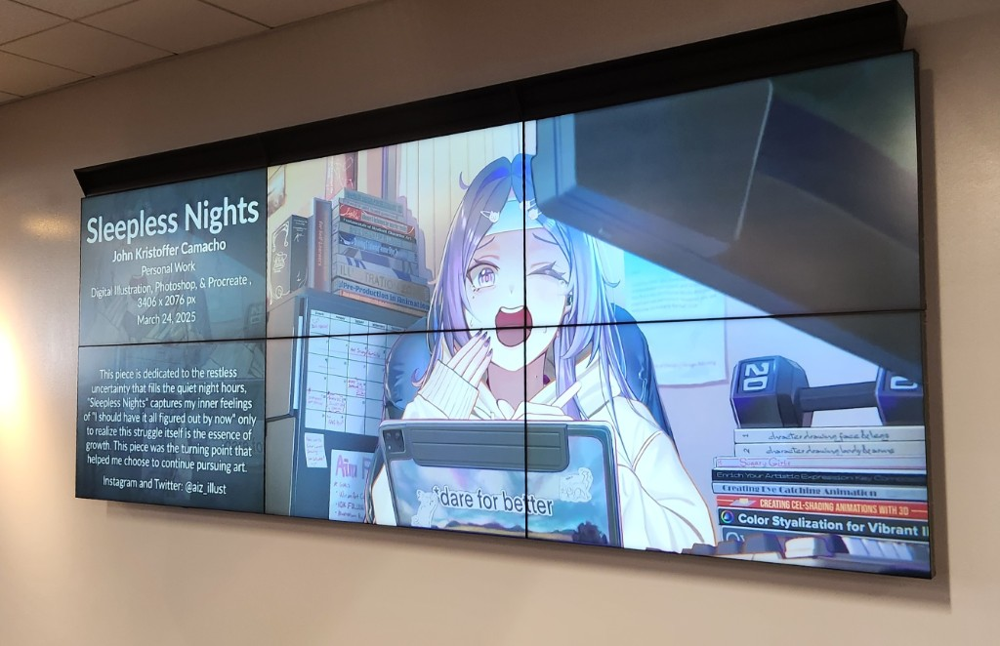
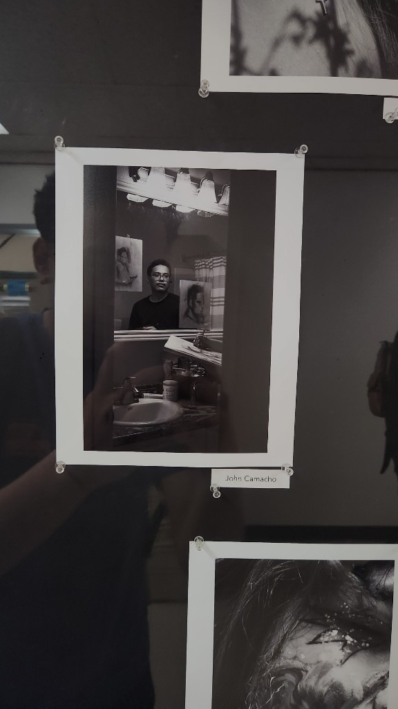
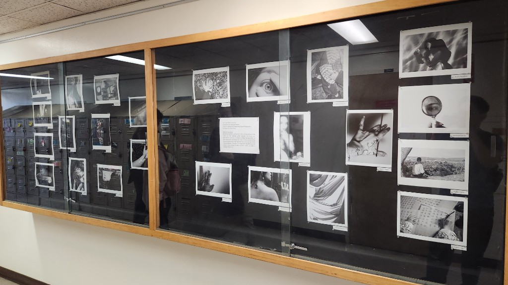

Hello,
It’s been a while since my last entry… but a lot has happened since then.
So quick life update,
My piece that received an honorable mention from Pixiv also got featured in SJSU’s Art Student Exhibition at the MLK Library.

It’s been on my goal list for a long time, to have my work shown in an actual exhibition space. So being able to check that off feels kind of unreal. At the same time, it doesn’t feel like an “end” to anything. More like… okay, now we keep going.
I’ve still been applying to more exhibitions and contests since then. Trying to stay in that momentum instead of letting it be a one time thing.
The second exhibition I was part of was for my Photo 40 class.
The theme was self portraiture, and my piece focused on my perfectionism, how it kind of warps the way I see myself. It wasn’t really about making something “nice,” but more about trying to understand something that’s been sitting in my head for a while.


Lately, I’ve been doing a lot more photography through my classes, and I’ve started entering contests for those too (fingers crossed… we’ll see 😭).
But I get it now.
When people say photography teaches you a lot about art, they’re not lying. Having to consciously think about composition, lighting, framing… all of that carries over. It’s been helping my photos, but also weirdly feeding back into my other work too.
Also, side note,
I started a photography account: @j.picturr
Trying different types of shots, experimenting, just seeing what sticks. It’s been really fun.
Follow me here:
https://www.instagram.com/j.picturr/
On top of that, I’ve been learning orchestral music production on the side.
I can’t fully explain it yet… but all of these things I’m doing right now feel connected. Like they’re slowly building into something bigger. Especially with my senior year and capstone coming up.
So yeah, more to come.
Till next time,
-j